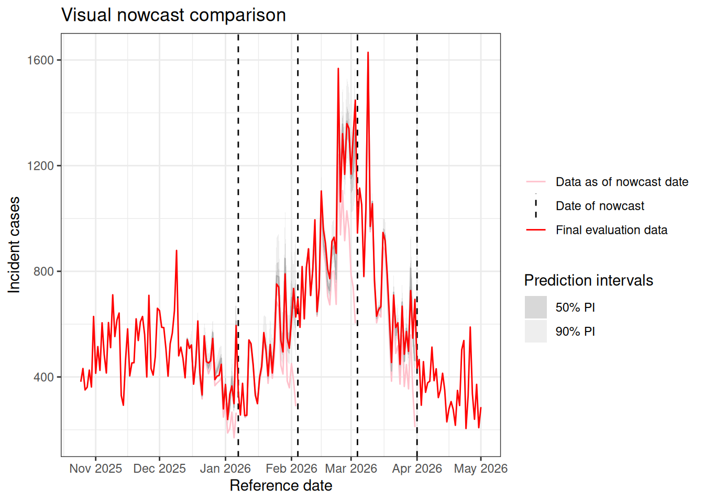
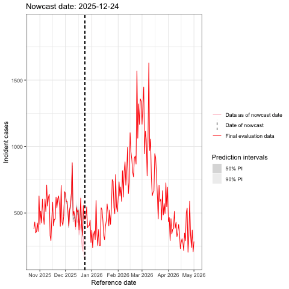
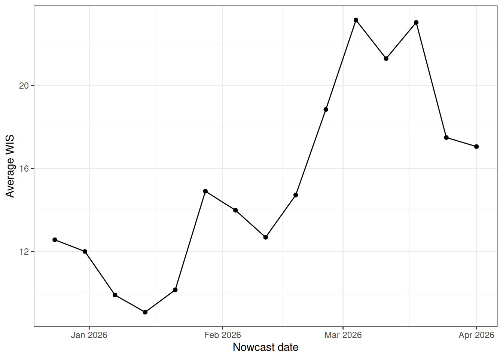
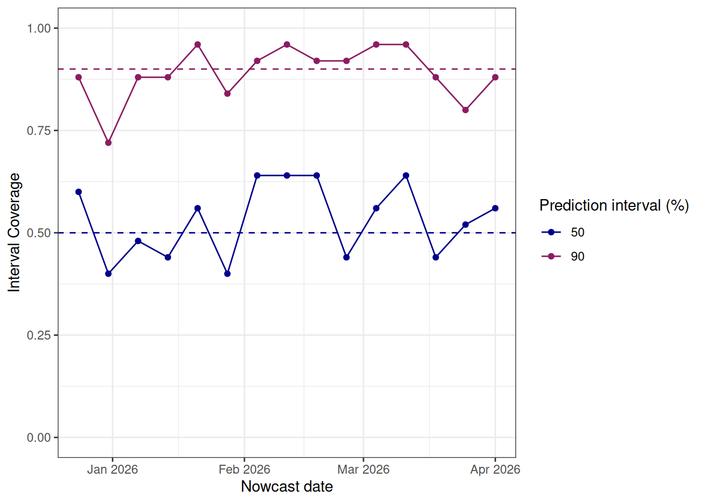
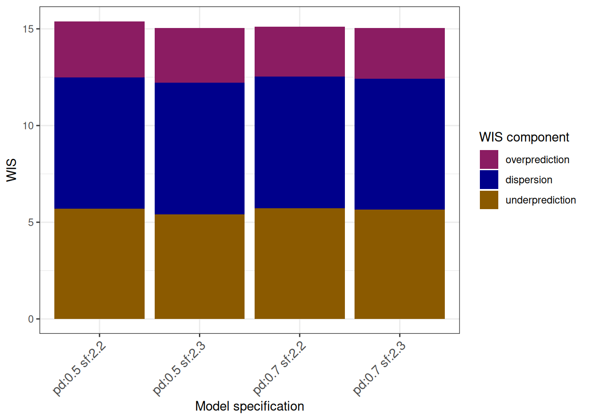
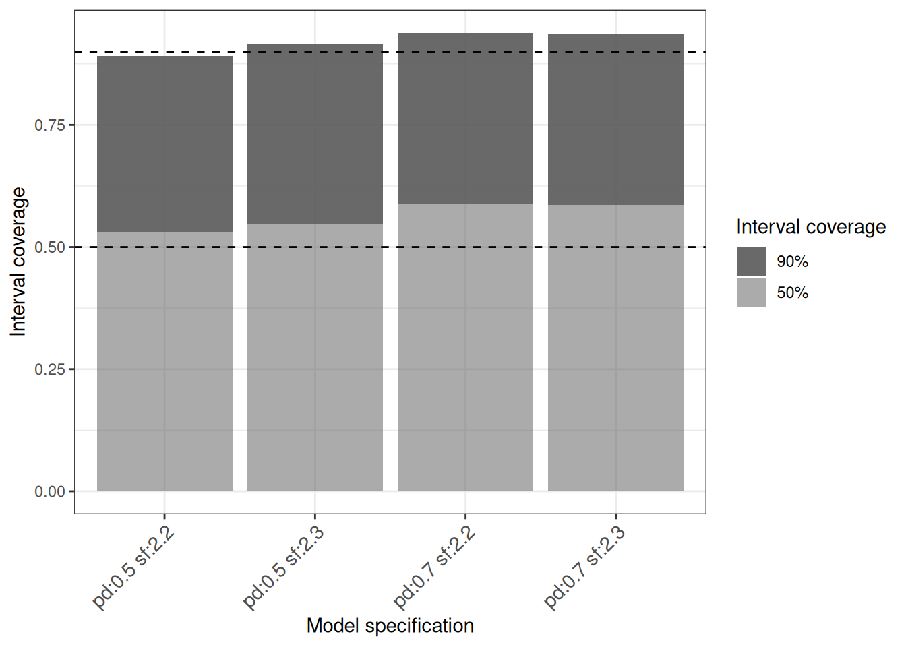

Example nowcast performance evaluation for model specification
Source:vignettes/evaluation_example.Rmd
evaluation_example.RmdIn this vignette, we demonstrate how to evaluate the performance of your baselinenowcast nowcast across multiple nowcast dates.
We’ll use visual checks and out-of-sample scoring with proper scoring rules from the scoringutils package.
For more resources on forecast evaluation, we recommend checking out the scoringutils documentation describing various scoring rules used for evaluating point and probabilistic forecasts.
We also recommend checking out materials from the Nowcasting and Forecasting of Infectious Disease Dynamics (NFIDD) short course on forecast evaluation, which walks through many of the principles of forecast evaluation alongside worked examples.
Additionally, we evaluate the performance of baselinenowcast under different model specifications and compared to other nowcasting methods in our publication.
We’ll start by evaluating a single model specification, and then show how to compare multiple specifications to inform your modelling choices, specifically focusing on evaluating the performance under different training volume specifications (proportion of data used for delay estimation and the amount of total training volume used).
Before working through this vignette, we advise you to read both the Getting Started and the NSSP nowcast vignettes, both of which will demonstrate how to produce a nowcast for a single nowcast date.
0.1 Packages
We use the baselinenowcast package, dplyr and tidyr for data-wrangling, glue for combining strings, lubridate for handling dates, purrr for efficient iterating, ggplot2 and gganimate for static and animated plotting (respectively), and the scoringutils to evaluate out of sample nowcast performance.
0.2 Data
For this example, we will use the NSSP data, syn_nssp_df which is a synthetic dataset containing the number of incident cases indexed by reference and report date, both indexed at the daily scale.
The pathogen is not specified, but presumably this could represent the cases of a common respiratory syndrome such as influenza or COVID-19.
The data spans a typical respiratory virus season from 2025-2026, with reference dates ranging from October 25th, 2025 to May 5th, 2026, with reports ranging from October 25th, 2025 to August 23rd, 2027.
head(syn_nssp_df)
#> # A tibble: 6 × 3
#> reference_date report_date count
#> <date> <date> <dbl>
#> 1 2025-10-25 2025-10-25 194
#> 2 2025-10-25 2025-10-26 54
#> 3 2025-10-25 2025-10-27 26
#> 4 2025-10-25 2025-10-28 13
#> 5 2025-10-25 2025-10-29 12
#> 6 2025-10-25 2025-10-30 130.3 Evaluating across a range of nowcast dates
We’ll start by specifying the range of nowcast dates that we want to produce retrospective nowcasts for. Since this data has no historical data before October 25th, 2025, we will produce nowcasts each week on Wednesday from December 10th, 2025 to April 1st, 2026.
0.3.0.1 Set the maximum delay
The maximum delay should be specified based on both the delay distribution and your own knowledge of the data generating process (e.g. delays of more than a few weeks might be expected to be data entry errors). We refer the reader to the NSSP case study vignette, where we use an exploratory data analysis to identify an appropriate maximum delay of 25 days for this dataset.
0.3.1 Specify a single model
We’ll start by evaluating a single baselinenowcast specification.
With the maximum delay set to 25 days, we can specify the total number of reference dates used for training as 2.2 times the maximum delay using the scale_factor argument and the proportion of that used for delay estimation with the prop_delay argument.
The package defaults use a scale_factor of 3 and prop_delay of 0.5, however, because the syn_nssp_df dataset has relatively little historical data, we are going to restrict the total amount of training volume to 2.2 x 25 = 55 reference times to ensure we use the same amount of training data for all retrospective nowcasts.
These defaults were chosen based on two different case studies applied to data from COVID-19 in Germany and norovirus in England, see our publication for more details.
max_delay <- 25
scale_factor <- 2.2
prop_delay <- 0.50.3.2 Looping over multiple nowcast dates
First, we will write a function that extracts the training data that would have been available as of each nowcast date, by excluding all cases indexed or reported before the nowcast date.
get_training_data <- function(raw_data,
nowcast_date,
max_delay) {
training_data <- filter(
raw_data,
report_date < nowcast_date,
reference_date < nowcast_date
)
return(training_data)
}Next we will set up a for loop to retrospectively produce nowcasts at each of the specified nowcast dates.
We’ll run this loop by creating a function which performs the following steps for a single nowcast date, and looping over it with the map_dfr() function from purrr.
Steps in the function include:
1. Creating the data to train the model using the data available as of each nowcast date.
2. Generating the initial case report data, which represents the count of cases on each reference date reported as of the nowcast date. We expect this to be downward biased due to right-truncation in the most recent reference dates.
3. Generating the data to evaluate the nowcast using the latest observations. We’ll only include reports that occurred within the maximum delay window to ensure a fair comparison across all nowcast dates, as including all reports would mean that earlier nowcast dates are compared against longer delays than more recent nowcast dates. See our publication and Wolffram et al. for further details.
4. Creating a reporting_triangle object from the training data and truncating it to the specified max_delay
5. Producing a baselinenowcast_df which contains draws of probabilistic nowcasts for each reference date.
6. Converting the nowcast draws to a scoringutils forecast object using as_forecast_sample().
7. Converting the scoringutils forecast_sample object to quantiles using as_forecast_quantile(). This will by default generate the quantile levels corresponding to the median, 50% and 90% prediction intervals. To obtain other intervals, use the probs argument.
8. Left joining the initial data for plotting.
run_single_nowcast <- function(nowcast_date, prop_delay, scale_factor,
data, max_delay) {
nowcast_date <- as.Date(nowcast_date)
training_data <- get_training_data(
raw_data = data,
nowcast_date = nowcast_date
)
initial_count_data <- training_data |>
group_by(reference_date) |>
summarise(initial_count = sum(count)) |>
filter(reference_date >= max(reference_date) - days(max_delay))
eval_data <- data |>
mutate(delay = as.integer(report_date - reference_date)) |>
filter(delay <= max_delay, reference_date < nowcast_date) |>
group_by(reference_date) |>
summarise(final_count = sum(count)) |>
ungroup()
rep_tri <- as_reporting_triangle(training_data) |>
truncate_to_delay(max_delay = max_delay)
nowcast_df <- baselinenowcast(rep_tri,
scale_factor = scale_factor,
prop_delay = prop_delay,
draws = 1000
)
su_draws <- as_forecast_sample(
nowcast_df,
latest_obs = eval_data,
observed = "final_count",
model = "baselinenowcast"
)
su_quantiles <- su_draws |>
as_forecast_quantile() |>
left_join(initial_count_data, by = "reference_date")
return(su_quantiles)
}Note, running this loop will print out a number of informational messages at each iteration, informing you that the reporting triangle has been truncated to the maximum delay and telling you exactly what proportion of the training volume was used for delay estimation.
As a final step, we bind the nowcasts for each nowcast_date together, tracking it with the nowcast_date column which we convert to a Date.
0.3.3 Visual comparison of nowcasts
To make a static image, we will start by visualising the nowcasts compared to both the initial data available without nowcasting and the final data available retrospectively.
First, we’ll need to pivot the quantiles from long to wide for plotting.
We’ll first convert to a data.frame and then use pivot_wider from tidyr.
When we converted to quantiles using
mult_nowcasts_to_plot <- mult_nowcasts |>
as.data.frame() |>
pivot_wider(
id_cols = c(
"nowcast_date", "reference_date", "initial_count",
"observed", "model"
),
names_from = quantile_level,
values_from = predicted,
names_prefix = "q_"
)We’ll start by making a shared plotting function, which expects a dataframe with columns for the quantiled probabilistic nowcasts (gray), the final data (red), and the initial data (pink).
Our dataframe will contain only evaluation data for the days that we nowcasted (e.g. from the nowcast date to max_delay days ago).
If we want to see the full set of final evaluation data, we need to make this from the original data.
eval_data_full <- syn_nssp_df |>
mutate(delay = as.integer(report_date - reference_date)) |>
filter(delay <= max_delay) |>
group_by(reference_date) |>
summarise(final_count = sum(count)) |>
ungroup()
plot_multiple_nowcasts <- function(data, eval_data_full) {
p <- ggplot(data) +
geom_line(
aes(
x = reference_date, y = initial_count,
group = nowcast_date,
color = "Data as of nowcast date"
)
) +
geom_vline(aes(
xintercept = nowcast_date,
color = "Date of nowcast"
), linetype = "dashed") +
geom_line(aes(x = reference_date, y = `q_0.5`, group = nowcast_date),
color = "gray"
) +
geom_ribbon(aes(
x = reference_date, ymin = `q_0.25`, ymax = `q_0.75`,
group = nowcast_date,
fill = "50% PI"
), alpha = 0.25) +
geom_ribbon(aes(
x = reference_date, ymin = `q_0.05`, ymax = `q_0.95`,
group = nowcast_date,
fill = "90% PI"
), alpha = 0.25) +
geom_line(
data = eval_data_full,
aes(
x = reference_date, y = final_count,
color = "Final evaluation data"
)
) +
scale_color_manual(
name = "",
values = c(
"Final evaluation data" = "red",
"Data as of nowcast date" = "pink",
"Date of nowcast" = "black"
)
) +
scale_fill_manual(
name = "Prediction intervals",
values = c(
"90% PI" = "gray",
"50% PI" = "gray40"
)
) +
scale_x_date(
date_breaks = "1 month",
date_labels = "%b %Y"
) +
theme_bw() +
xlab("Reference date") +
ylab("Incident cases") +
ggtitle("Visual nowcast comparison")
return(p)
}To make a static image, we will start by showing a probabilistic nowcast every 4 weeks alongside the final data (red) and the initial data (pink). First we will filter the nowcast dates to once every four weeks.
nowcast_dates_to_visualize <- seq(
from = ymd("2025-12-10"),
to = ymd("2026-04-01"), by = "4 weeks"
)
mult_nowcasts_filtered <- filter(
mult_nowcasts_to_plot,
nowcast_date %in% nowcast_dates_to_visualize
)
p <- plot_multiple_nowcasts(
data = mult_nowcasts_filtered,
eval_data_full = eval_data_full
)
p
However, we might be interested in visually comparing the performance of each individual weekly nowcast.
To achieve this, we call the plotting function above for the dataframe with all the nowcast dates, and then we add the animation code to make this into a “flipbook” using gganimate, where each slide shows a single nowcast.
p_all_dates <- plot_multiple_nowcasts(
data = mult_nowcasts_to_plot,
eval_data_full = eval_data_full
)
p_anim <- p_all_dates +
labs(title = "Nowcast date: {closest_state}") +
transition_states(nowcast_date, transition_length = 0, state_length = 1) +
ease_aes("linear")
knitr::include_graphics(file.path(
"..", "man", "figures",
"nowcast_flipbook.gif"
))
This can be saved as a GIF with the command anim_save().
anim_save("nowcast_flipbook.gif",
animation = p_anim
)
0.3.4 Evaluation of nowcast performance using scoringutils
In addition to visually assessing nowcast performance, quantitative performance evaluation can help us rigorously test the performance of different models and assess the reliability and accuracy of the nowcasts produced.
In this vignette and elsewhere, we evaluate the predicted final case counts against the observed final case counts, similar to Wolffram et al and Johnson et al..
Another reasonable option would be to evaluare what was nowcasted against what was later observed.
To quantify nowcast performance, we can evaluate nowcasts using proper scoring rules using the scoringutils package.
Before proceeding, we strongly recommend reading the package documentation for scoringutils and walking through the vignette on scoring rules.
We also recommend checking out materials from the Nowcasting and Forecasting of Infectious Disease Dynamics (NFIDD) short course on forecast evaluation, which walks through many of the principles of quantitative forecast evaluation alongside worked examples.
In this vignette, we will evaluate the quantile-based nowcasts using the weighted interval score (WIS), which is a proper scoring rule that approximates the continuous ranked probability score (CRPS) which is a probabilistic scoring rule for sample-based forecasts that is itself a generalisation of the absolute error for probabilistic forecasts.
Additionally, we will compute the interval coverage, which tells us how well the model is calibrated by calculating the proportion of observations that fall within each prediction interval. A perfectly well-calibrated forecast would have the exact same interval coverage as the nominal coverage (e.g., 90% of observations fall within the 90% prediction interval). We’ll also look at bias and absolute error.
Note: The scoringutils package also supports sample-based scoring using the CRPS directly if you prefer to work with draws rather than quantiles.
For this vignette, we focus on WIS and its components:
- Overprediction: penalty for predicting too high
- Underprediction: penalty for predicting too low
- Dispersion: penalty for prediction interval width
To compute these metrics, we’ll call the scoringutils score() function to score the quantile-based nowcasts.
scores_quantiles <- score(mult_nowcasts)
head(scores_quantiles)
#> nowcast_date reference_date model initial_count wis
#> <Date> <Date> <char> <num> <num>
#> 1: 2025-12-24 2025-11-29 baselinenowcast 477 0.00
#> 2: 2025-12-24 2025-11-30 baselinenowcast 660 0.00
#> 3: 2025-12-24 2025-12-01 baselinenowcast 634 17.00
#> 4: 2025-12-24 2025-12-02 baselinenowcast 588 0.04
#> 5: 2025-12-24 2025-12-03 baselinenowcast 565 18.36
#> 6: 2025-12-24 2025-12-04 baselinenowcast 507 1.08
#> overprediction underprediction dispersion bias interval_coverage_50
#> <num> <num> <num> <num> <lgcl>
#> 1: 0.0 0 0.00 0.0 TRUE
#> 2: 0.0 0 0.00 0.0 TRUE
#> 3: 0.0 17 0.00 -1.0 FALSE
#> 4: 0.0 0 0.04 0.0 TRUE
#> 5: 0.0 18 0.36 -1.0 FALSE
#> 6: 0.2 0 0.88 0.5 TRUE
#> interval_coverage_90 ae_median
#> <lgcl> <num>
#> 1: TRUE 0
#> 2: TRUE 0
#> 3: FALSE 17
#> 4: TRUE 0
#> 5: FALSE 22
#> 6: TRUE 1We now have a table of scores at every nowcast date and reference date.
Let’s first summarise the scores overall using the summarise_scores() function from scoringutils.
scores_summary <- summarise_scores(scores_quantiles)
head(scores_summary)
#> model wis overprediction underprediction dispersion bias
#> <char> <num> <num> <num> <num> <num>
#> 1: baselinenowcast 15.39165 2.91296 5.702027 6.776664 -0.0904
#> interval_coverage_50 interval_coverage_90 ae_median
#> <num> <num> <num>
#> 1: 0.5306667 0.8906667 23.93467This summary tells us that the model is overall biased slightly downward (indicated by the negative bias). It slightly overcovers at 50% prediction intervals (meaning the prediction intervals are a bit too wide) but is very well-calibrated at 90% prediction intervals (89% of observations fall within the 90% prediction intervals). In terms of overall performance, the nowcasts are penalised more heavily for underprediction than overprediction (which corroborates the negative bias) and is most penalised for being over-dispersed (prediction intervals are too wide, as corroborated by the 50% interval coverage value).
To further investigate trends over time, we can look at how nowcast performance varies across nowcast dates.
We’ll visualize this by first summarizing the scores by nowcast date, again using the summarise_scores() function but this time summarising by nowcast_date.
scores_by_nowcast_date <- summarise_scores(scores_quantiles,
by = "nowcast_date"
) |> mutate(nowcast_date = as.Date(nowcast_date))
ggplot(scores_by_nowcast_date) +
geom_line(aes(x = nowcast_date, y = wis)) +
geom_point(aes(x = nowcast_date, y = wis)) +
theme_bw() +
scale_x_date(
date_breaks = "1 month",
date_labels = "%b %Y"
) +
xlab("Nowcast date") +
ylab("Average WIS")
While this tells us how the nowcast performance varies over time, it can be a bit difficult to interpret on its own because WIS scales with the counts of the observations, thus, we expect higher WIS when case counts are higher.
It’s therefore not surprising that we see higher WIS values in March, as this is when case counts are highest.
Another option would be to log-transform both your predictions and observations prior to scoring, which would alleviate the impact of the magnitude of cases and approximately evaluate on the predicted growth rate rather than the predicted counts.
This can be easily performed on the nowcast quantiles using the scoringutils function transform_forecast(fun == log_shift, offset = 1, append = FALSE), see scoringutils documentation for implementation details.
For more information on the implications of scoring epidemiological forecasts on transformed scales, see Bosse et al..
To better understand how the nowcasts perform over time, we can look at how well calibrated they are across nowcast dates, by looking at the 50th and 90th prediction intervals by nowcast date compared to their nominal values (indicated by the dashed horizontal line), as ideally the model is equally well-calibrated across time, even the magnitude of case counts changes.
scores_long <- scores_by_nowcast_date |>
pivot_longer(
cols = starts_with("interval_coverage_"),
names_to = "interval",
names_prefix = "interval_coverage_",
values_to = "interval_coverage_value"
)
ggplot(scores_long) +
geom_line(aes(
x = nowcast_date, y = interval_coverage_value,
color = interval
)) +
geom_point(aes(
x = nowcast_date, y = interval_coverage_value,
color = interval
)) +
geom_hline(aes(yintercept = 0.50),
linetype = "dashed",
color = "darkblue"
) +
geom_hline(aes(yintercept = 0.90),
linetype = "dashed",
color = "maroon4"
) +
scale_color_manual(
name = "Prediction interval (%)",
values = c(
"50" = "darkblue",
"90" = "maroon4"
)
) +
coord_cartesian(ylim = c(0, 1)) +
theme_bw() +
scale_x_date(
date_breaks = "1 month",
date_labels = "%b %Y"
) +
xlab("Nowcast date") +
ylab("Interval Coverage")
Here, we see relatively robust prediction interval coverage across the range of nowcast dates. We can visually see that in February and March, more than 50% of observations fall within the 50% prediction interval, indicating this interval is slightly wider than would be ideal.
0.4 Choosing a model specification using quantitative performance evaluation
The baselinenowcast package is set-up to use sensible defaults, which we evaluated in our publication using COVID-19 data from Germany and norovirus data from England.
In that work, we found that the package defaults, with a scale_factor = 3 and a prop_delay = 0.5, performed well compared to a variety of different model specifications.
In general, we recommend customising the model specifications based on the context and the users needs for the nowcast in order to improve performance.
For the dataset used in this vignette, we have visually and quantitatively evaluated a single nowcasting model specification across multiple retrospective nowcast dates.
Next, we will expand this to look at the performance under a limited set of additional training volume specifications.
The same process could be applied to many of the other options for specifying baselinenowcast, including but not limited to:
- accounting for weekday effects via stratification by weekday
- sharing estimates across strata (e.g. letting the delay from all age groups be used to nowcast each individual age groups case counts)
- changing the observation model
Here, we will test out using larger proportions of the training data for delay estimation (via the prop_delay argument to baselinenowcast()) and we will test out using more or less training volume (via the scale_factor argument to baselinenowcast()).
In this example, we are somewhat limited because we don’t have a lot of historical data for training, but you can expand these to vary more in your use-case. See ?allocate_reference_times() for more details on the constraints of the training volume requirements.
We can use the pmap_dfr function from the purrr package to iterate through each combination of nowcast dates, proportion of data used for delay estimation, and the total number of reference dates used for training, using the same function we previously defined above run_single_nowcast().
To save computation time, I will exclude the training volume specifications we already nowcasted and bind them to the output.
prop_delays <- c(0.5, 0.7)
scale_factors <- c(2.2, 2.3)
mult_nowcasts_w_metadata <- mutate(
mult_nowcasts,
prop_delay = prop_delay,
scale_factor = scale_factor
)
param_grid <- expand.grid(
nowcast_date = nowcast_dates,
prop_delay = prop_delays,
scale_factor = scale_factors,
stringsAsFactors = FALSE
) |>
filter(!(prop_delay == 0.5 & scale_factor == 2.2))
mult_nowcasts_ms <- pmap_dfr(
param_grid,
\(nowcast_date, prop_delay, scale_factor) {
nowcast <- run_single_nowcast(nowcast_date, prop_delay, scale_factor,
data = syn_nssp_df,
max_delay = max_delay
) |>
mutate(
nowcast_date = as.Date(nowcast_date),
prop_delay = prop_delay,
scale_factor = scale_factor
)
return(nowcast)
},
.progress = TRUE
) |>
bind_rows(mult_nowcasts_w_metadata)We next score the quantiles for all the nowcast dates and training volume specifications.
scores_quantiles <- score(mult_nowcasts_ms)
head(scores_quantiles)
#> reference_date model initial_count nowcast_date prop_delay
#> <Date> <char> <num> <Date> <num>
#> 1: 2025-11-29 baselinenowcast 477 2025-12-24 0.7
#> 2: 2025-11-30 baselinenowcast 660 2025-12-24 0.7
#> 3: 2025-12-01 baselinenowcast 634 2025-12-24 0.7
#> 4: 2025-12-02 baselinenowcast 588 2025-12-24 0.7
#> 5: 2025-12-03 baselinenowcast 565 2025-12-24 0.7
#> 6: 2025-12-04 baselinenowcast 507 2025-12-24 0.7
#> scale_factor wis overprediction underprediction dispersion bias
#> <num> <num> <num> <num> <num> <num>
#> 1: 2.2 0.120 0.0 0.0 0.120 0.0
#> 2: 2.2 0.220 0.0 0.0 0.220 0.0
#> 3: 2.2 10.061 0.0 9.4 0.661 -0.9
#> 4: 2.2 1.640 0.4 0.0 1.240 0.5
#> 5: 2.2 11.040 0.0 9.6 1.440 -0.9
#> 6: 2.2 1.680 0.2 0.0 1.480 0.5
#> interval_coverage_50 interval_coverage_90 ae_median
#> <lgcl> <lgcl> <num>
#> 1: TRUE TRUE 0
#> 2: TRUE TRUE 0
#> 3: FALSE TRUE 17
#> 4: TRUE TRUE 2
#> 5: FALSE TRUE 20
#> 6: TRUE TRUE 10.4.1 Summarise performance by model specification
We can summarise the performance across reference dates and nowcast dates for each model specification, in order to compare how each one perform overall.
scores_summary <- scores_quantiles |>
mutate(model = "baselinenowcast") |>
summarise_scores(by = c("model", "prop_delay", "scale_factor")) |>
select(
model, prop_delay, scale_factor, wis, underprediction, overprediction,
dispersion, interval_coverage_50, interval_coverage_90, bias,
ae_median
)
scores_summary_table <- scores_summary |>
# nolint start
rename(
"Model" = model,
"Proportion for delay" = prop_delay,
"Scale factor" = scale_factor,
"50% coverage" = interval_coverage_50,
"90% coverage" = interval_coverage_90,
"WIS" = wis,
"Absolute Error (median)" = ae_median
) |>
# nolint end
knitr::kable(digits = 3)
scores_summary_table| Model | Proportion for delay | Scale factor | WIS | underprediction | overprediction | dispersion | 50% coverage | 90% coverage | bias | Absolute Error (median) |
|---|---|---|---|---|---|---|---|---|---|---|
| baselinenowcast | 0.7 | 2.2 | 15.108 | 5.724 | 2.576 | 6.808 | 0.589 | 0.939 | -0.129 | 23.392 |
| baselinenowcast | 0.5 | 2.3 | 15.043 | 5.414 | 2.828 | 6.801 | 0.547 | 0.915 | -0.075 | 23.463 |
| baselinenowcast | 0.7 | 2.3 | 15.033 | 5.664 | 2.609 | 6.760 | 0.587 | 0.936 | -0.121 | 23.373 |
| baselinenowcast | 0.5 | 2.2 | 15.392 | 5.702 | 2.913 | 6.777 | 0.531 | 0.891 | -0.090 | 23.935 |
We can see from the summary table that the different training volume specifications all perform relatively similarly in terms of WIS.
In terms of interval coverage, the smaller prop_delay of 0.5 is less over-covered (54% vs 58% coverage at 50% prediction intervals).
To visualise differences in WIS, we can make a bar chart broken down by underprediction, overprediction, and dispersion.
scores_summary |>
pivot_longer(cols = c("overprediction", "underprediction", "dispersion")) |>
mutate(
name = factor(name,
levels = c(
"overprediction",
"dispersion",
"underprediction"
)
),
model_name = glue("pd:{prop_delay} sf:{scale_factor}")
) |>
ggplot() +
geom_bar(aes(x = model_name, y = value, fill = name),
stat = "identity", position = "stack"
) +
theme_bw() +
scale_fill_manual(
name = "WIS component",
values = c("maroon4", "blue4", "orange4")
) +
theme(
axis.text.x = element_text(
vjust = 1,
hjust = 1,
angle = 45,
size = 11
)
) +
xlab("Model specification") +
ylab("WIS")
This bar chart shows how similar the WIS scores are across the model specifications. Next we can compare the interval coverage visually, as this tells us about how well the model is calibrated under each specification. We want to choose a model specification whose interval coverage is as close to the nominal coverage as possible.
scores_summary |>
mutate(interval_coverage_90 = interval_coverage_90 - interval_coverage_50) |>
pivot_longer(cols = c("interval_coverage_90", "interval_coverage_50")) |>
mutate(
model_name = glue("pd:{prop_delay} sf:{scale_factor}"),
name = factor(name, levels = c(
"interval_coverage_90",
"interval_coverage_50"
))
) |>
ggplot() +
geom_bar(aes(x = model_name, y = value, alpha = name),
stat = "identity", position = "stack"
) +
theme_bw() +
scale_alpha_manual(
name = "Interval coverage",
values = c(
interval_coverage_90 = 0.9,
interval_coverage_50 = 0.5
),
labels = c(
interval_coverage_90 = "90%",
interval_coverage_50 = "50%"
)
) +
geom_hline(aes(yintercept = 0.50), linetype = "dashed") +
geom_hline(aes(yintercept = 0.90), linetype = "dashed") +
theme(
axis.text.x = element_text(
vjust = 1,
hjust = 1,
angle = 45,
size = 11
)
) +
xlab("Model specification") +
ylab("Interval coverage")
From the interval coverage bar chart, it is clear that theprop_delay = 0.7 model specifications over-cover compared to the prop_delay = 0.5 specifications.
0.4.2 Interpreting the results
Based on this (somewhat limited) sweep of model specifications, we see that overall, the WIS is relatively similar across the different training volume specifications.
However, when looking at interval coverage, we see improved interval coverage with prop_delay = 0.5.
Since the WIS is slightly lower for a scale_factor = 2.3 within the prop_delay = 0.5 options, we might choose this specification to move forward, thereby minimising the WIS while maintaining well-calibrated interval coverage.
1 Summary
In this vignette, we used baselinenowcast to produce and evaluate retrospective nowcasts across a range of nowcast dates.
We demonstrated how to visually assess nowcast performance across a range of nowcast dates, and we showed how to use the scoringutils package to perform quantitative nowcast evaluation.
Lastly, we demonstrated in a limited example how to use quantitative nowcast evaluation to decide on a baselinenowcast model specification for this specific dataset.
For a more comprehensive example evaluating the performance of baselinenowcast under different model specifications and compared to other nowcasting models, check out our publication.
For more resources on nowcast and forecast evaluation, we recommend checking out the NFIDD course materials and the scoringutils documentation.
Here you will find worked examples evaluating epidemic forecasts using proper scoring rules.